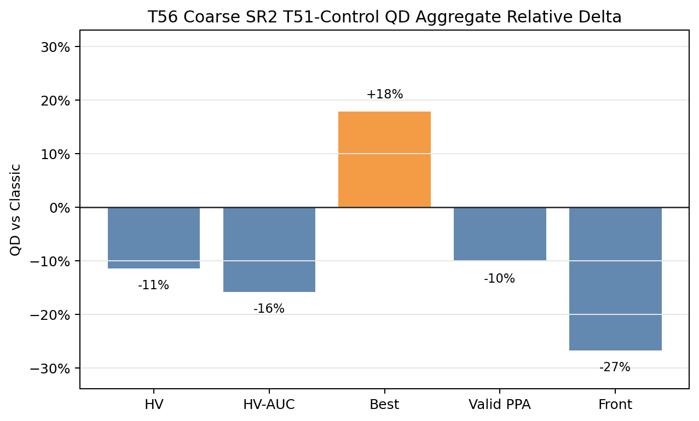
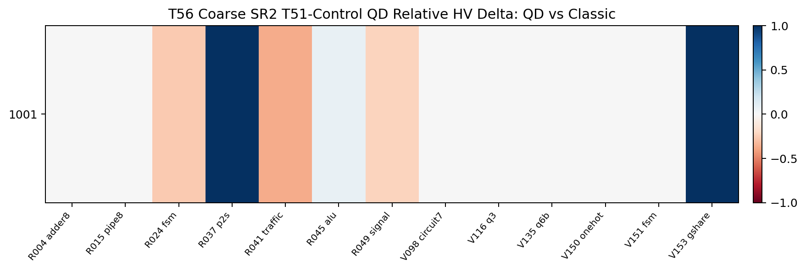
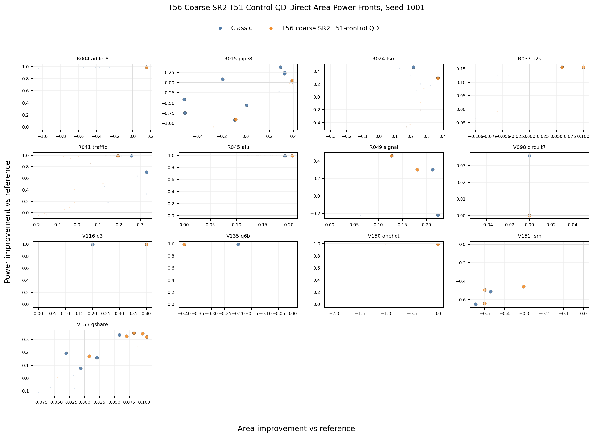
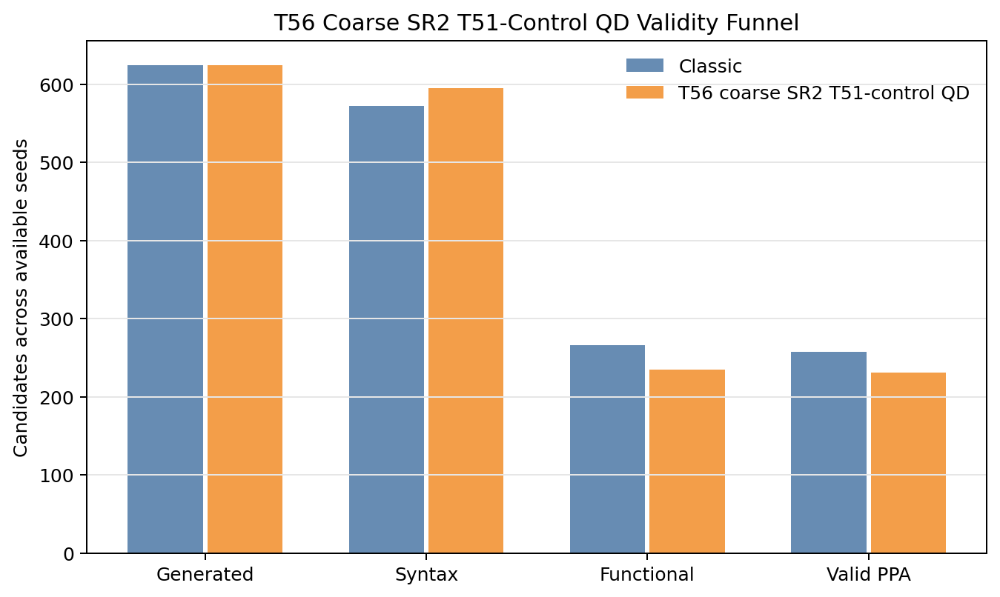
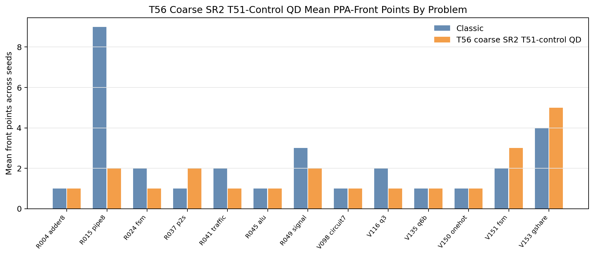
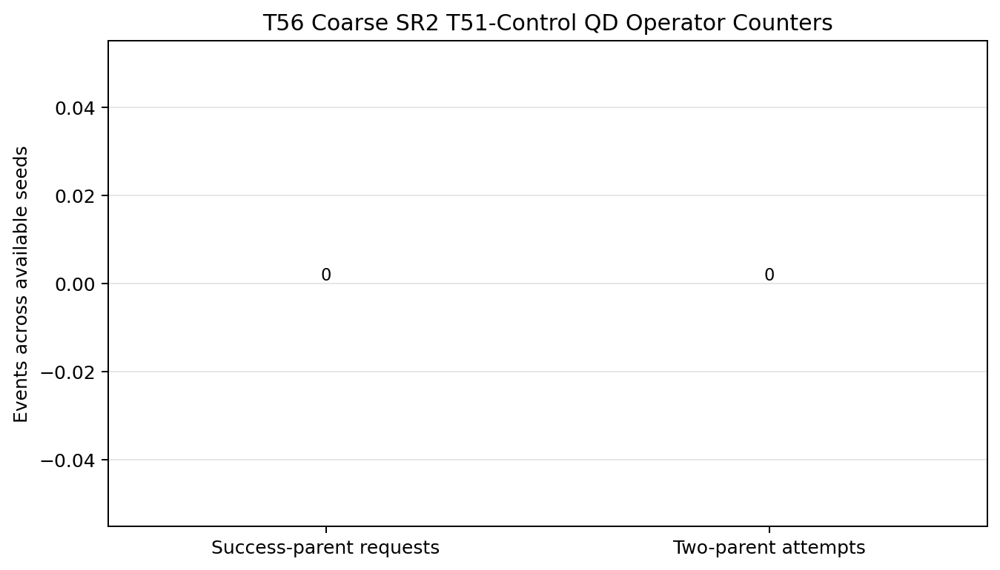

T56 Direct PPA Pareto Supplement
Static reader-facing figures for the completed 13-problem hard/tuning screen. T56 keeps the T51 parent policy and isolates only the coarser two-axis SR-PCA archive geometry. It preserves classic-covered design coverage, but loses mean HV, HV-AUC, valid-PPA yield, and front breadth.
-11.4%Mean HV
-15.8%Mean HV-AUC
+17.9%Mean best score
-26Valid PPA
-26.7%Front points
0Classic-covered losses
4Yield warnings
-8Reference beating
Aggregate Direction

Paired HV Heatmap

Direct Area-Power Fronts

Validity, Front Coverage, And Operator Counters


